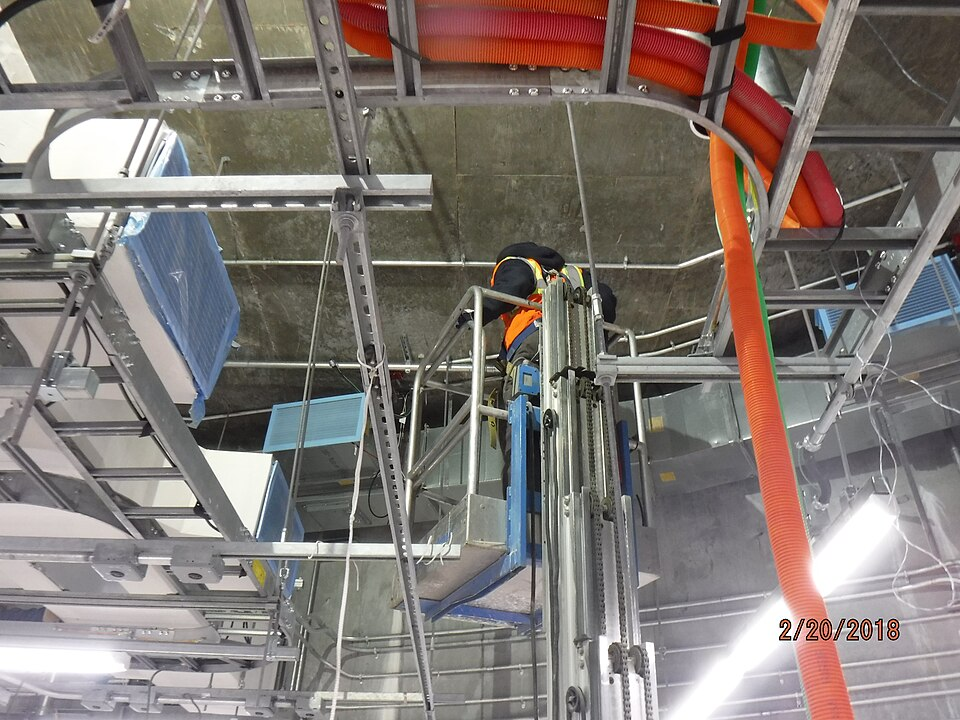

Commission a simulated air handler
Wire simulated field points, exercise the sequence of operation and hand over a test record with trends and fault evidence. The only loads are LEDs.
The pot represents a temperature sensor, the command LED stands in for the fan start request, and the proof switch represents a separate indication that the fan is moving air. See the labelled real AHU and its video to identify the equipment these points describe.
Build the point simulator

Photo by MTA Capital Construction Mega Projects, resized. Original photo · CC BY 2.0.
_(39727884614).jpg){kind=link}
Use a 5 V Arduino Uno, two switches, a 10 kΩ linear pot, two 1 kΩ resistors, one 100 kΩ resistor and two LEDs with 330 Ω resistors. Connect the pot end terminals through 1 kΩ each to 5 V and GND. Connect its wiper to A0 and add 100 kΩ from A0 to GND so a removed wiper lead reads near zero. The pot models 15–35 °C around ADC codes 85–938. Once the sketch is running, measure your actual endpoints and put them in adcAt15C and adcAt35C. Check that the full travel stays within the valid window of 60–960. Wire the switches from D2 and D3 to GND and the command and alarm LEDs from D8 and D9 through their resistors to GND, anodes toward the pins.
| Point | Type and bench pin | Meaning |
|---|---|---|
| Zone temperature | AI, A0 | Engineering units are °C. Invalid low/high codes simulate a wiring fault. |
| Enable permissive | BI, D2 | Closed contact permits operation. An open wire stops it. |
| Fan proof | BI, D3 | Closed contact simulates independent proof, such as airflow. |
| Fan command | BO, D8 | LED shows the controller’s command, regardless of proof. |
| Fault | Internal status, D9 indicator | Sensor fault or latched fan-proof alarm. |
Run the sequence
Watch on YouTube · How To: Pre-Tension a Damper Actuator · Belimo
Observe the actuator’s movement. Think about when the controller can issue a command and when a separate proof signal should arrive.
Demand starts at 25 °C and clears at 23 °C. Enable and a valid sensor are required. The fan waits for proof for up to three seconds. Loss of proof while running latches an alarm. With the permissive open and proof off, send R in Serial Monitor to clear a latched fault. A new start requires proof to be off at the time of the command. Keep Serial Monitor at 115200 and save the output as a CSV trend.
enum FanState { Off, WaitingForProof, Running, ProofFault };
FanState fan = Off;
bool demand = false;
const int adcAt15C = 85;
const int adcAt35C = 938;
unsigned long commandAt = 0;
unsigned long reportAt = 0;
void setup() {
pinMode(2, INPUT_PULLUP);
pinMode(3, INPUT_PULLUP);
pinMode(8, OUTPUT);
pinMode(9, OUTPUT);
Serial.begin(115200);
Serial.println("ms,adc,temp_C,valid,enable,proof,command,proof_fault,alarm");
}
void loop() {
const unsigned long now = millis();
const int adc = analogRead(A0);
const bool valid = adc >= 60 && adc <= 960;
const bool enabled = digitalRead(2) == LOW;
const bool proof = digitalRead(3) == LOW;
const int scaledAdc = constrain(adc, adcAt15C, adcAt35C);
const float temp = 15.0 + (scaledAdc - adcAt15C) * 20.0 / (adcAt35C - adcAt15C);
const bool resetRequested = Serial.available() > 0 && Serial.read() == 'R';
if (!valid || temp <= 23.0) demand = false;
else if (temp >= 25.0) demand = true;
if (fan == ProofFault) {
if (resetRequested && !enabled && !proof && valid) fan = Off;
} else if (!enabled || !valid || !demand) {
fan = Off;
} else if (fan == Off) {
if (proof) {
fan = ProofFault;
} else {
commandAt = now;
fan = WaitingForProof;
}
} else if (fan == WaitingForProof) {
if (now - commandAt >= 3000) fan = ProofFault;
else if (proof) fan = Running;
} else if (!proof) {
fan = ProofFault;
}
const bool command = fan == WaitingForProof || fan == Running;
const bool alarm = !valid || fan == ProofFault;
digitalWrite(8, command ? HIGH : LOW);
digitalWrite(9, alarm ? HIGH : LOW);
if (now - reportAt >= 250) {
reportAt = now;
Serial.print(now); Serial.print(',');
Serial.print(adc); Serial.print(',');
if (valid) Serial.print(temp, 2);
Serial.print(',');
Serial.print(valid); Serial.print(',');
Serial.print(enabled); Serial.print(',');
Serial.print(proof); Serial.print(',');
Serial.print(command); Serial.print(',');
Serial.print(fan == ProofFault); Serial.print(',');
Serial.println(alarm);
}
}Record five functional tests
- Check each point end-to-end. Move the pot and both switches one at a time. Record raw ADC, scaled value, switch polarity and the named point.
- Close enable with proof open and raise the temperature above 25 °C. Close proof within three seconds. Lower temperature below 23 °C and confirm the command drops, then open the proof switch. Record the two observed thresholds and the gap between them.
- Repeat startup with proof open past the deadline. Verify command off and alarm latched. Open enable, keep proof open and send
R. For the next trial, close proof before enabling to simulate a stuck proof switch. Expect an alarm and no fan command. - During a valid run, unplug the pot wiper lead at A0 while keeping the 100 kΩ pull-down attached. Confirm temperature is absent, the alarm comes on and the command stops. Disable the sequence, restore the pot and return to the known-good state.
- During another valid run, open the proof switch. Confirm a latched fault. Try to reset while enable remains closed, then complete the approved bench reset sequence and run a normal cycle.
In the handover, include the points list, expected/actual test results, alarm timestamps, one normal and one failing trend, and the safe state left at the end. For a protocol extension, use the separate isolated training network in P14 or the simulated BACnet lab in C02. Map a raw value to a documented engineering unit and compare it with the local trend. BACnet International glossary and object terminology.
Turn this into an interview case
Take a photo of your powered-down trainer with the enable switch, proof switch, temperature pot and both LEDs labelled. Use the following example to write your own result. Keep the terminal or Arduino pin, CSV timestamp and outcome visible together.
| Test | Expected | What to record from your run |
|---|---|---|
| Fan command with no proof | Proof at D3 stays off. About three seconds after the fan command starts, D8 goes off and the alarm at D9 goes on. | Paste the CSV rows around the command and alarm changes, report the elapsed time and note how you restored the trainer. |
Explain why command and proof are separate. In a building, a command on the front end shows what the controller requested. The proof is the separate field observation. Use that distinction in your handover and in C17’s BMS job route.